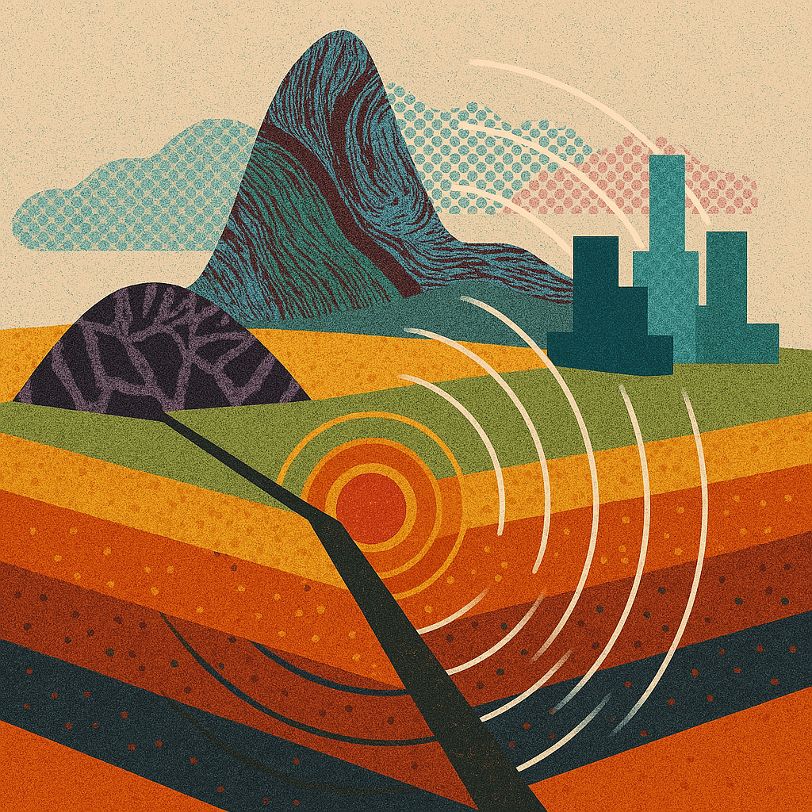

I investigate the source properties and physical properties of small to large earthquakes. I use variety of methods: including back-projection, waveform simulations, and even rock friction experiments.
Related papers:
- Zhang, H., Barbot, S., Yang, Z., Zhang, L., Liu, M. & Platt, J., Large megathrust earthquakes in cold mantle wedge corners under lawsonite blueschist facies, under review
- Zhang, H. & Vidale, J.E., Earthquake high-frequency energy radiation scales with rupture complexity, under review for Science
- Wu, B., Li, B., Zhang, H., Huang, S., Li, G. & Gabriel, A.-A., Near‑fault Strong‑motion of the 2023 Mw7.8 Kahramanmaraş Earthquake: Insights into High‑frequency Radiation Mechanisms, JGR: Solid Earth, 130, e2025JB031757, doi: 10.1029/2025JB031757
- Barbot, S., Güvercin, S.E., Zhang, L., Zhang, H. & Yang, Z., Thermobaric control of fault friction, Geophy. Res. Let., 52, e2024GL112959, doi: 10.1029/2024GL112959
- Zhang, H., Vidale, J.E. & Wang, W., 2025. Aftershocks on the planar rupture surface of the deep-focus Mw 7.9 Bonin Islands earthquake, The Seismic Record, 5(1):35-43, doi: 10.1785/0320240035